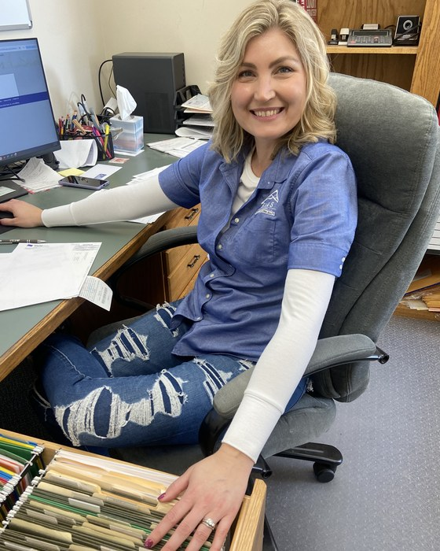
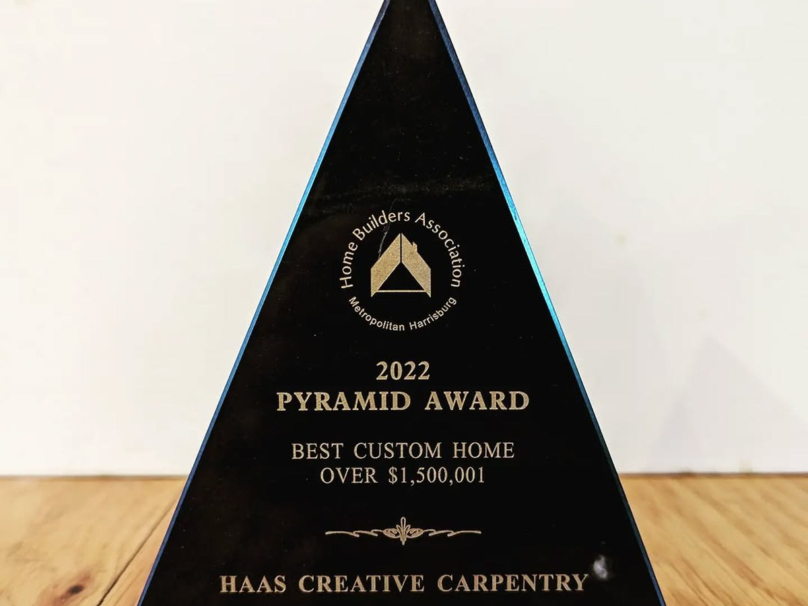
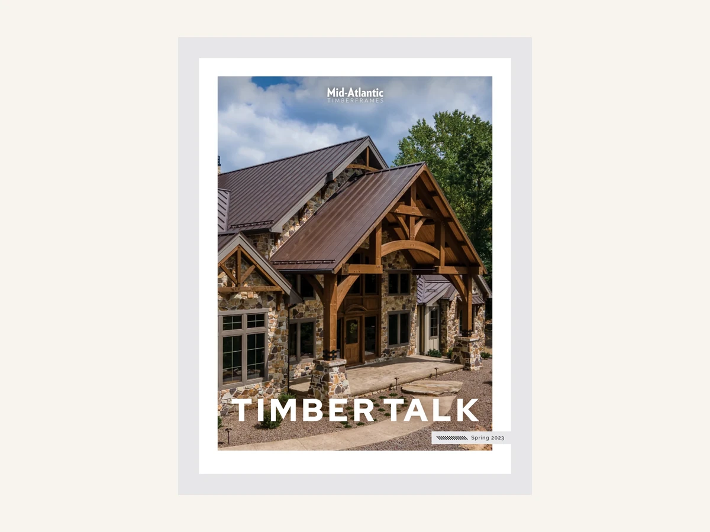

PERRY & CUMBERLAND COUNTIES
RECENT WORK.
 DUSTIN HAASFACEBOOK →
DUSTIN HAASFACEBOOK →
LOYSVILLE, PENNSYLVANIA
DUSTIN AND THE CREW.
“After working for more than 15 years for ‘the other guys’, I decided I had had enough.” Dustin Haas, Loysville
Started 2016 · bought Collins Construction and its shop, 2024 · custom homes, remodels and the woodwork in them
The crew
 EmilyProject manager
EmilyProject manager TracyOffice administrator
TracyOffice administrator
BrookeFinance administrator ScottField crew
ScottField crew BearPawsitivity supervisor
BearPawsitivity supervisor
Plus Trevin, Landen and William — three full-time hands who came up through the trade.
2022
AWARDS.
In 2022 the Home Builders Association of Metropolitan Harrisburg gave ours the award for the best custom home over $1,500,001.



TEN YEARS BUILDING HERE
REVIEWS.
★★★★★
The Bells Shermans Dale, PA
“Admittedly I am a bit of a micromanager, however during the entire construction process Dustin and team kept us fully informed and engaged.”
★★★★★
Todd & Audrey New Bloomfield, PA · September 2022
“We were never asked to select from a pre-set list of materials or to use cookie-cutter options. This team truly offers a CUSTOM design.”
★★★★★
Catrina Spano
“The quality in craftsmanship and attention to detail was as if Haas Creative Carpentry took my thoughts and dreams and made them a reality.”
BEFORE YOU CALL
QUESTIONS.
Do you build timber frame homes?
Yes — timber framing is regular work here. The trusses, the arched beams and the porch roofs in the projects above were cut and raised by this crew.
Do I need house plans before I call?
No. Most people start with a sketch and a rough idea of the budget. Dustin sits in on the design meetings with your designer, so the plan gets drawn by people who already know what it will take to build it.
Do you take small jobs, or only whole houses?
Both. Alongside the custom homes the shop does remodels and finish carpentry — custom cabinets, a butler's pantry, a laundry room, a live-edge desktop, a basement finished out.
What happens first when I get in touch?
Call the shop Monday to Friday, 7:00 to 4:30, or send the project form further down this page. The job starts in pre-construction — planning it on paper before anything gets built.
What areas do you build in?
The shop is on Shermans Valley Road in Loysville and most jobs stay inside Perry and Cumberland counties. Elliottsburg, Shermans Dale, New Bloomfield and Millerstown are regular ground, and Carlisle is a short run over the mountain.